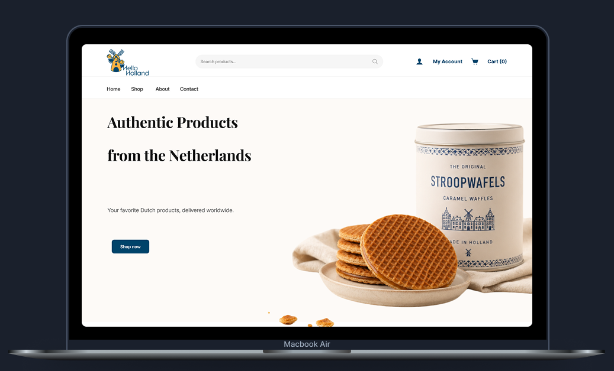
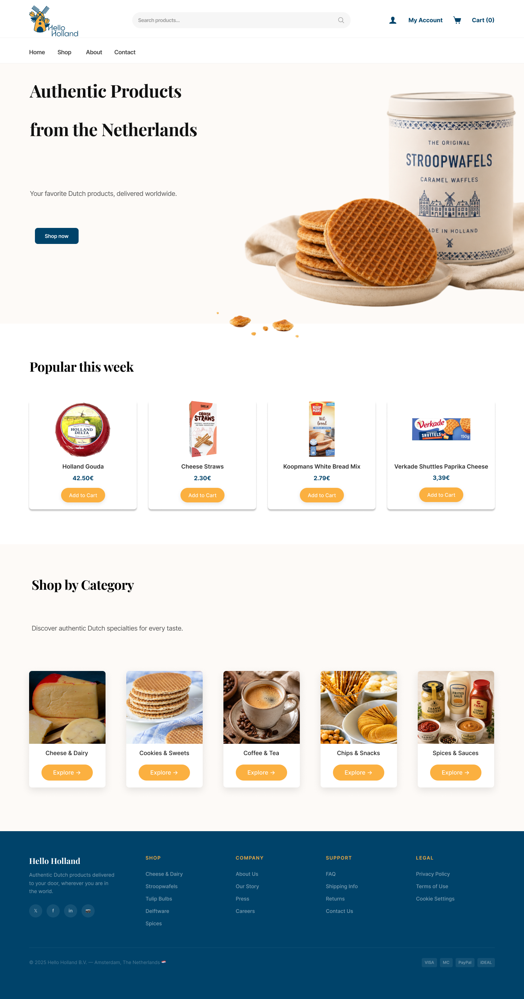
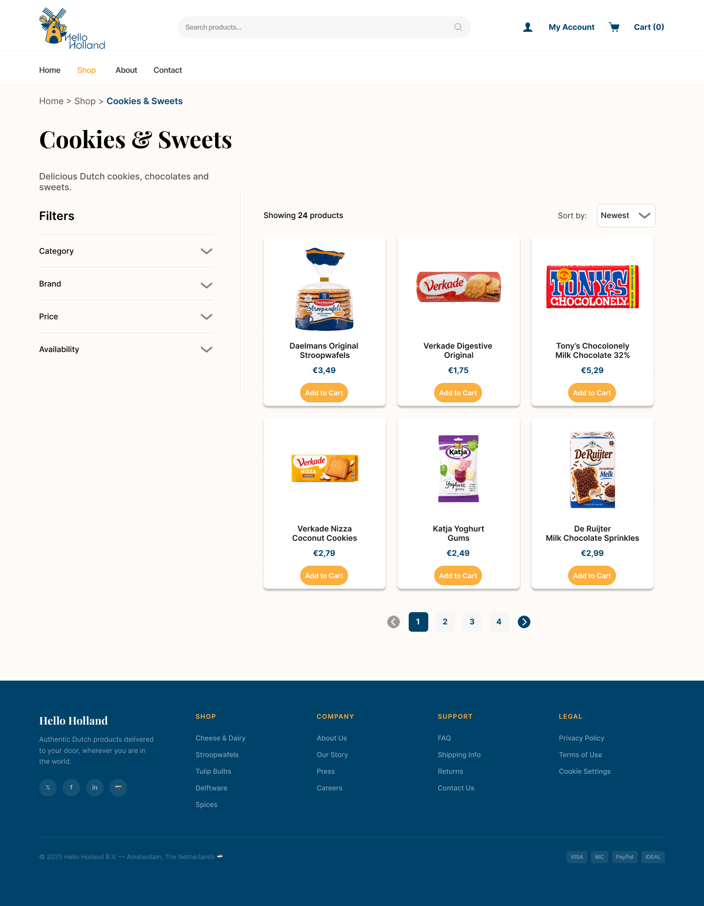
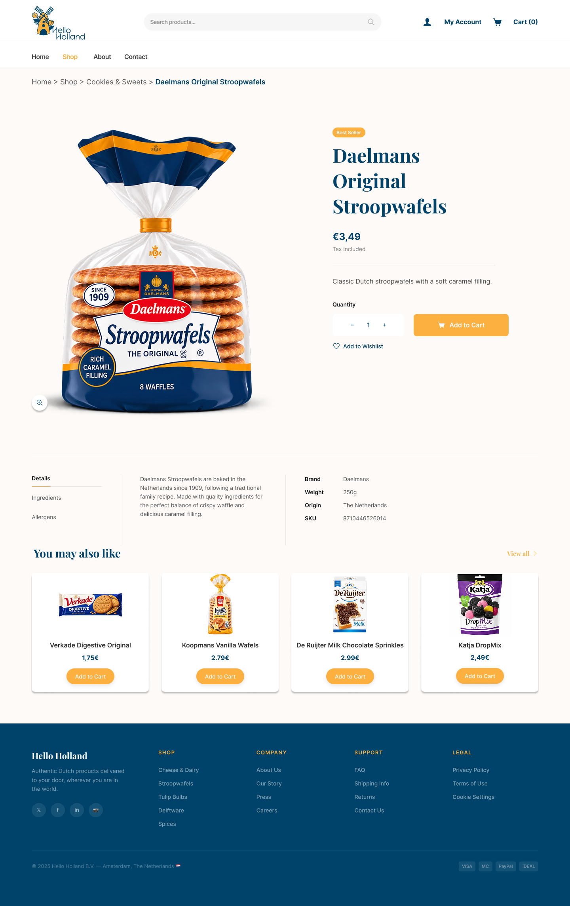
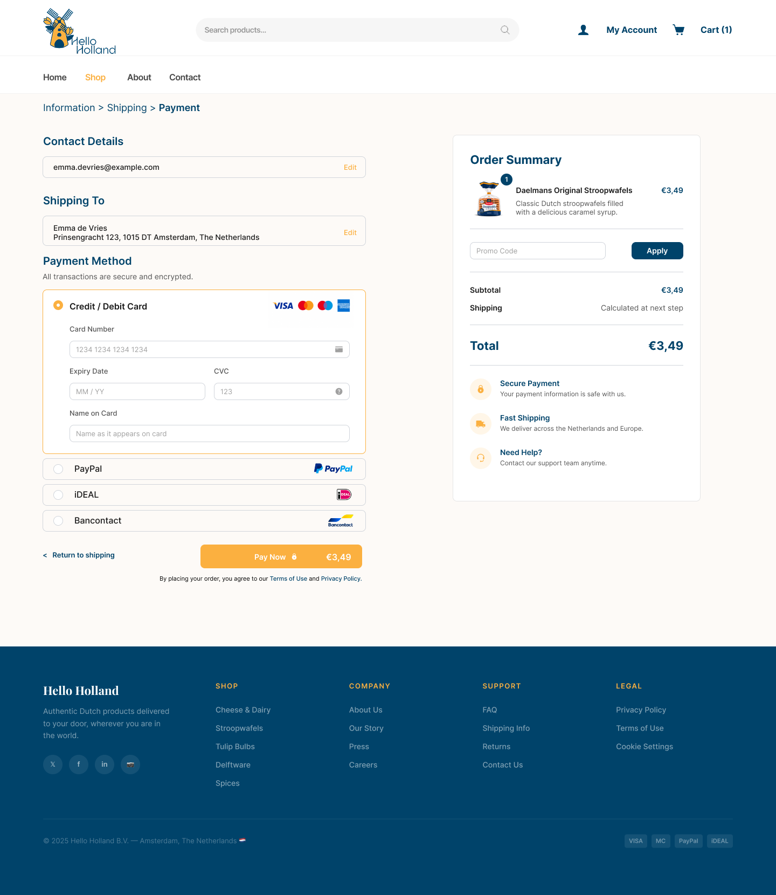
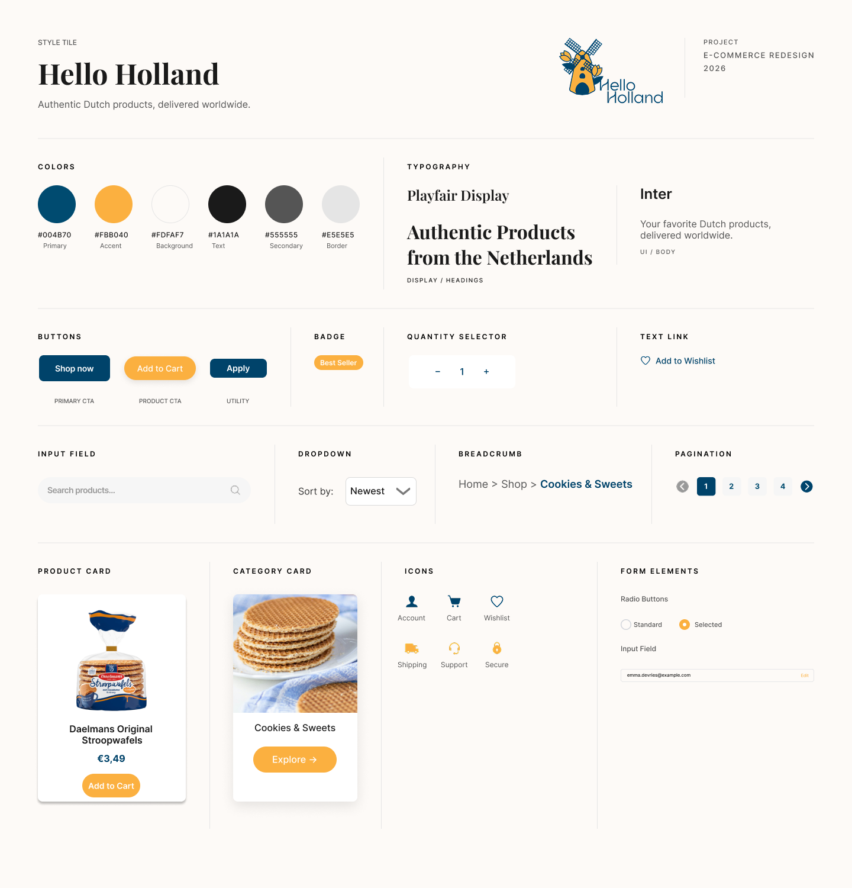

Hello Holland

Hello Holland is a complete redesign of an outdated Dutch e-commerce website. The goal was to transform a cluttered, text-heavy interface into a clean, modern, and emotionally appealing shopping experience. The redesign focuses on clarity, efficient navigation, and a stronger visual identity inspired by Dutch culture, but with a contemporary, minimalistic twist.
This project was part of the Interaction Design II course and required applying official design patterns from Designing Interfaces (Tidwell), focusing on navigation, layout, lists, user input, and interaction dynamics.
[PROJECT]
Interaction Design II
[MY ROLE]
UI/UX Design, Expert Review, Interaction Design, Visual Identity
[TOOLS]
Figma, Illustrator, UI Design Patterns
[Challenge]
The redesign focused on transforming an outdated e-commerce website with unclear navigation, overwhelming text blocks, and inconsistent layout. The main challenge was to reorganize the experience into a structured, modern, and intuitive interface while applying correct design patterns to improve product discovery, filtering, and overall usability.
[Goal]
- Improve product discovery through clear filtering and sorting
- Establish a modern and consistent visual identity
- Enhance overall usability with a structured layout and intuitive navigation

Original website layout (brand name removed for copyright reasons)
[My Process]
> Initial Analysis
Analyzed the original website to identify usability issues such as cluttered navigation, inconsistent layout, overwhelming text blocks, and lack of visual hierarchy.
> Pattern Selection
Selected appropriate UI patterns from Designing Interfaces (Tidwell), focusing on navigation, layout, lists, and user input to guide the redesign.
> Information Architecture
Redefined the structure of categories and navigation to improve product discoverability and create a more intuitive browsing flow.
> Wireframes & Interaction Flow
Developed low-fidelity sketches to explore layout possibilities and streamline filtering, sorting, and product exploration.
> High-Fidelity Design
Created a clean, modern, and minimalistic interface inspired by Dutch cultural elements, applying consistent visual identity across pages.
> Iteration & Refinement
Improved spacing, hierarchy, and interaction details based on feedback and expert critique to ensure clarity and usability.

Pattern 1 - Menu Page
I redesigned the homepage with a clearer visual hierarchy, highlighting key products and simplifying the way users discover different product categories.
Pattern 2 — Grid Layout
I enhanced the grid layout by using larger product images and a cleaner, more readable structure. The product cards focus on essential information, with clear product names, prominent pricing, and consistent calls to action to improve visual scanning and product comparison.
Pattern 3 - Category Cards
I replaced the original text-heavy category list with visual category cards, combining imagery, clear labels, and consistent calls to action to make browsing more intuitive and engaging.

Pattern 4 – White Space & Spacing
I increased the spacing between filters, product cards, and navigation elements to reduce visual clutter and create clearer separation between sections. This improves readability and makes the product grid easier to scan.
Pattern 5 - Pagination
I designed the pagination to clearly highlight the current page using a distinct color, improving visual feedback and helping users understand their position within the navigation flow more easily.

Pattern 6 — Breadcrumb Navigation
I added breadcrumb navigation to help users understand their position within the webshop and easily return to broader product categories, creating a clearer and more intuitive navigation experience.
Pattern 7 — Button Groups
I created a clear hierarchy by grouping the main purchase actions, combining the quantity selector with a prominent “Add to Cart” button while keeping “Add to Wishlist” as a secondary action.
Pattern 8 — Disabled Irrelevant
I set the default quantity to 1 instead of 0, as selecting zero items would not be relevant to the purchase process. This keeps the quantity selector focused on valid purchase quantities.

Pattern 9 – Input Hints
I used input hints in the payment and promo code fields to show the expected format or information, helping users understand what to enter before completing the purchase.

Style Tile — Visual Identity Overview
This style tile defines the visual language of the redesigned Hello Holland webshop, documenting the color palette, typography, buttons, form elements, navigation components, icons, and product cards used throughout the interface. The design combines Playfair Display for headings with Inter for UI and body text, supported by a consistent blue and orange color palette. These elements create a cohesive design system focused on clarity, visual hierarchy, consistency, and ease of use across the shopping experience.